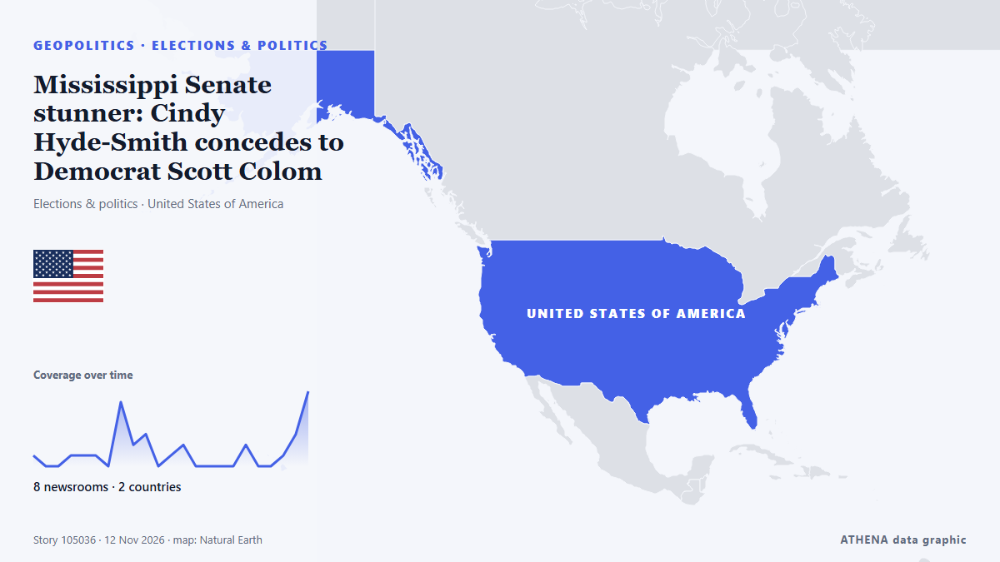

Mississippi Senate stunner: Cindy Hyde-Smith concedes to Democrat Scott Colom

Democrat Scott Colom is set to become Mississippi's next senator after Republican Sen. από The Hill
Αναφέρθηκε ανεξάρτητα από 9 μέσα σε 3 χώρες από τις 31 Οκτ, πρώτο το The Hill· η κάλυψη εξασθενεί. Το ATHENA εκτιμά τον κίνδυνο χαμηλό (1.5/10), κυρίως λόγω της σοβαρότητάς του και της τεκμηρίωσης. Βεβαιότητα 83% (υψηλή): το επιβεβαιώνουν 9 ανεξάρτητα μέσα, μέση αξιοπιστία 73%. Μέσα ανά χώρα: Ηνωμένες Πολιτείες (29), Ηνωμένο Βασίλειο (2), Γερμανία (1). Κάλυψη: 31 Οκτ έως 12 Νοε, 268 ώρες.
Γιατί έχει σημασία: Οι εξελίξεις στην ασφάλεια και τη διπλωματία μπορούν να μετατοπίσουν συμμαχίες, εμπόριο και αγορές πολύ πέρα από τις χώρες που εμπλέκονται.
Τι άλλαξε: 11 νέες αναφορές από 8 μέσα στο 24ωρο έως 12 Νοε.
Πρώτη διατύπωση: Hyde-Smith and Colom make final pitches in Mississippi Senate midterm race
Οι τίτλοι των ειδήσεων παρουσιάζονται στα αγγλικά, όπως δημοσιεύτηκαν.
Πώς να διαβάσετε αυτή τη σελίδα
- Τι διαβάζετε
- 9 μέσα σε 3 χώρες ανέφεραν αυτό το γεγονός. Οι αναφορές παρακάτω εμφανίζονται με τη σειρά που δημοσιεύτηκαν· κάθε τίτλος ανοίγει το αρχικό άρθρο. Το ATHENA δεν γράφει δικά του ρεπορτάζ.
- Η εκτίμησή μας
- Για την καταγραφή — Οι αναφορές περιγράφουν ένα ολοκληρωμένο, εσωτερικό, εμπορικό ή προσωπικό ζήτημα. Το καταγράφουμε ώστε να βλέπετε ποιος το ανέφερε και πότε. Δεν παρακολουθούμε εδώ κίνδυνο ευρύτερης σύγκρουσης.
- Πόσα στοιχεία υπάρχουν
- Περιορισμένη Αντιμετωπίστε τη σελίδα ως πρώιμη αναφορά.
Αφού αφαιρεθούν οι επαναλήψεις, τα άσχετα και τα παλιά στοιχεία, υπολογίζονται 4 από τις 32 αναφορές που παρατίθενται· το 97% των τίτλων αντιστοιχεί στο γεγονός.
- Τι δεν σημαίνει
- Το ATHENA μετρά πώς καλύπτεται ένα γεγονός, όχι αν είναι αληθές. Δεν είναι πρόβλεψη, κρίση για το ποιος έχει δίκιο ή συμβουλή.
- Τι θα την άλλαζε
- Αναφορές από άλλα ανεξάρτητα μέσα που δείχνουν διαφορετική εξέλιξη, ή σαφής επιβεβαίωση ή διάψευση από επίσημη πηγή.
Εκτίμηση R2 · ανανεώνεται με κάθε ενημέρωση της σελίδας. Το ATHENA δεν έχει δημοσιεύσει ακόμη ιστορικό επιδόσεων για αυτές τις εκτιμήσεις· όταν το κάνει, θα συνδέεται εδώ.
Με μια ματιά
Επιλέγεται, βαθμολογείται και γράφεται από τη δημοσιευμένη μεθοδολογία του ATHENA. Κανένας συντάκτης δεν παρεμβαίνει σε μεμονωμένα γεγονότα. Πώς παράγεται ›
| 31 Oct 22:50 UTC | 1 |
|---|---|
| 01 Nov 10:50 UTC | 0 |
| 01 Nov 22:50 UTC | 0 |
| 02 Nov 10:50 UTC | 1 |
| 02 Nov 22:50 UTC | 1 |
| 03 Nov 10:50 UTC | 1 |
| 03 Nov 22:50 UTC | 0 |
| 04 Nov 10:50 UTC | 6 |
| 04 Nov 22:50 UTC | 2 |
| 05 Nov 10:50 UTC | 3 |
| 05 Nov 22:50 UTC | 0 |
| 06 Nov 10:50 UTC | 1 |
| 06 Nov 22:50 UTC | 2 |
| 07 Nov 10:50 UTC | 0 |
| 07 Nov 22:50 UTC | 0 |
| 08 Nov 10:50 UTC | 0 |
| 08 Nov 22:50 UTC | 0 |
| 09 Nov 10:50 UTC | 2 |
| 09 Nov 22:50 UTC | 0 |
| 10 Nov 10:50 UTC | 0 |
| 10 Nov 22:50 UTC | 1 |
| 11 Nov 10:50 UTC | 3 |
| 11 Nov 22:50 UTC | 8 |
| 02 Nov 20:37 UTC | 0.0 |
|---|---|
| 05 Nov 07:36 UTC | 1.5 |
| 05 Nov 21:00 UTC | 0.0 |
| 07 Nov 02:25 UTC | 0.9 |
| 12 Nov 01:59 UTC | 1.7 |
| 12 Nov 03:02 UTC | 1.5 |
Γιατί αυτοί οι αριθμοί
Σημασία
Κίνδυνος
Βεβαιότητα
Η κάλυψη — ποιος το ανέφερε και πότε
ο τίτλος όπως δημοσιεύτηκε · ανοίγει το πρωτότυπο- The Hill · Ηνωμένες ΠολιτείεςScott Colom releases ‘Sinners’-themed campaign ad as Mississippi Senate race heats up
- Mississippi Today · Ηνωμένες ΠολιτείεςHyde-Smith and Colom make final pitches in Mississippi Senate midterm race
- Mississippi Today · Ηνωμένες ΠολιτείεςLIVE: 2026 Mississippi election results
- PBS NewsHour · Ηνωμένες ΠολιτείεςLive Results: Mississippi Senate midterm election
- NPR · Ηνωμένες ΠολιτείεςVotes are still being counted to see who will represent Mississippi in the Senate
- The Hill · Ηνωμένες ΠολιτείεςMississippi Senate race too close to call
- Mississippi Today · Ηνωμένες ΠολιτείεςWho won Mississippi’s midterm Senate race? We may not know for a while
- Forbes Business · Ηνωμένες ΠολιτείεςDemocrats’ Odds Of Winning Mississippi Near 90% In Betting Markets
- Mississippi Today · Ηνωμένες Πολιτείες‘An army of lawyers.’ Colom, Hyde-Smith camps monitor vote counting as nation watches
- Forbes Business · Ηνωμένες ΠολιτείεςDemocrats’ Odds Of Winning Mississippi Near 94% In Betting Markets
- Forbes Business · Ηνωμένες ΠολιτείεςMississippi’s Tight Senate Race Likely Won’t Feature A Recount—Here’s Why
- The Guardian · Ηνωμένο ΒασίλειοUS midterm elections 2026 live: Democrats exceed 250 House seats as blue wave sweeping Congress grows
- The Hill · Ηνωμένες ΠολιτείεςMississippi has an unexpectedly close Senate race but no recount procedure
- Mississippi Today · Ηνωμένες ΠολιτείεςThousands of affidavit ballots outstanding in Mississippi Senate election. Campaigns prepare for legal fight
- The Hill · Ηνωμένες ΠολιτείεςMississippi GOP chair says party will accept Colom victory should he win
- NPR · Ηνωμένες ΠολιτείεςNo one knows how many ballots are outstanding in Mississippi's Senate race
- The Hill · Ηνωμένες ΠολιτείεςHow Scott Colom turned his Mississippi Senate race into a nail-biter
- Mississippi Today · Ηνωμένες ΠολιτείεςLawyers, advocates hover as Mississippi election officials count final Colom, Hyde-Smith votes
- Mississippi Today · Ηνωμένες ΠολιτείεςTurns out, Mississippi voters were paying attention in the Colom, Hyde-Smith Senate race
- Mississippi Today · Ηνωμένες ΠολιτείεςHinds County on pace to finish Mississippi Senate count Monday, upload Wednesday
- Mississippi Today · Ηνωμένες ΠολιτείεςColom leads Hyde-Smith by nearly 3,000 votes in Mississippi US Senate race as final Hinds County tally looms
- The Hill · Ηνωμένες ΠολιτείεςColom extends slim lead over Hyde-Smith in Mississippi Senate race
- Mississippi Today · Ηνωμένες ΠολιτείεςHinds County finalizes Senate vote count, helps push Scott Colom over finish line
- CNBC World · Ηνωμένες ΠολιτείεςMississippi Senate: Scott Colom lead over Hyde-Smith pops to more than 4,400 votes
- NPR · Ηνωμένες ΠολιτείεςDemocrat Scott Colom wins Mississippi Senate race
- The Hill · Ηνωμένες ΠολιτείεςColom builds on slim lead in Mississippi, as AP calls for Democrat
- The Guardian · Ηνωμένο ΒασίλειοDemocrat Scott Colom unseats Cindy Hyde-Smith in stunning Mississippi Senate win
- The Hill · Ηνωμένες ΠολιτείεςMississippi Senate stunner: Cindy Hyde-Smith concedes to Democrat Scott Colom
- DW English · ΓερμανίαMississippi Senate race: Democrat Scott Colom defeats Republican Cindy Hyde-Smith
- PBS NewsHour · Ηνωμένες ΠολιτείεςNews Wrap: Democrat Scott Colom defeats Mississippi Sen. Cindy Hyde-Smith
- Rolling Stone · Ηνωμένες ΠολιτείεςMississippi Is Sending a Democrat to the Senate
- The Hill · Ηνωμένες ΠολιτείεςDemocrats rally around Colom's historic Mississippi victory